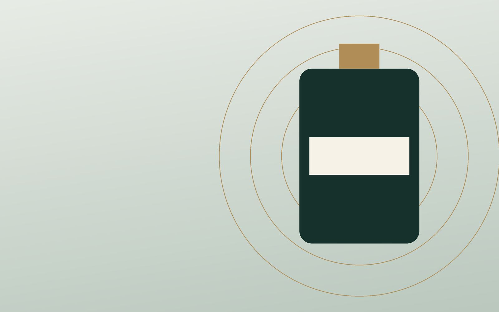
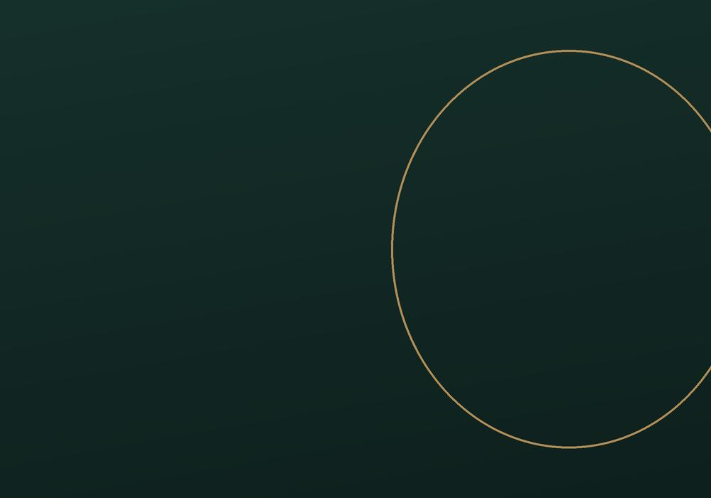
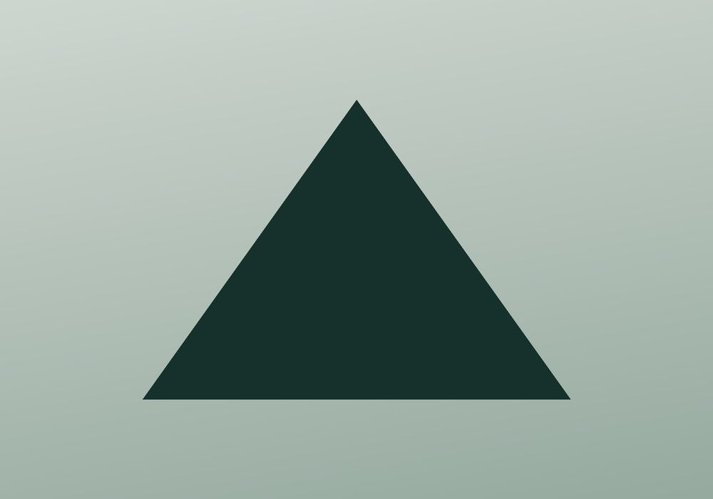

The art of keeping
Objects to keep. Stories to carry.
Considered pieces for the everyday, made with care and designed to gather meaning over time.
Explore the collection
Static GitHub Pages preview · Store, account, cart and checkout features require WordPress hosting
Selected for you

A considered collectionFewer things, chosen with intention.Explore the pieces Made to be keptThoughtful by design. Enduring by nature.Our point of view
Our point of view
Every Maison Verrane piece is designed to be repaired rather than replaced. We cut fewer styles, in better materials, and stand behind each one for life.
A little more about us